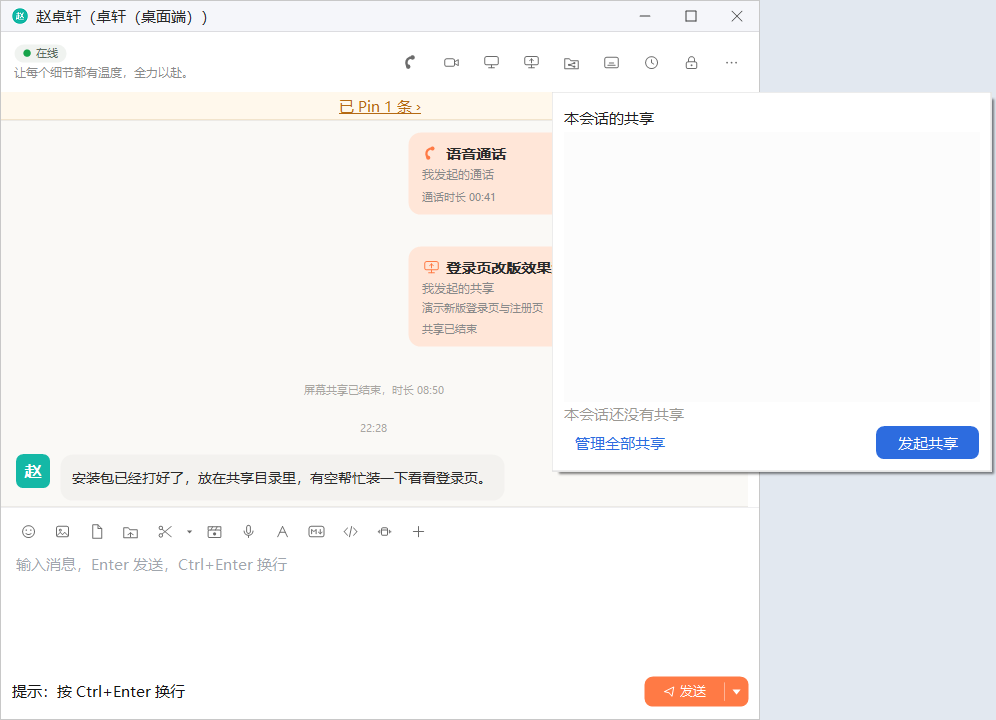
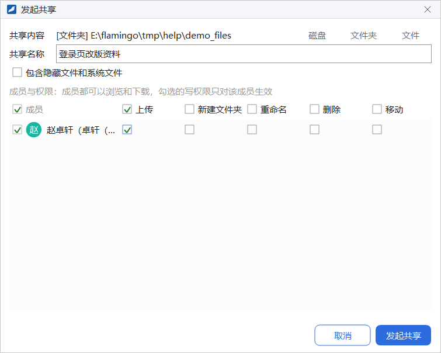
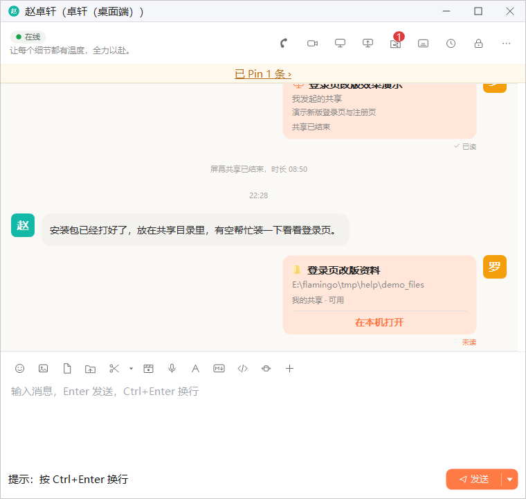
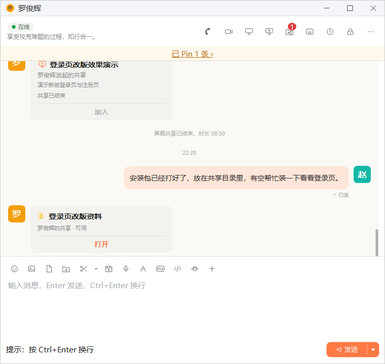
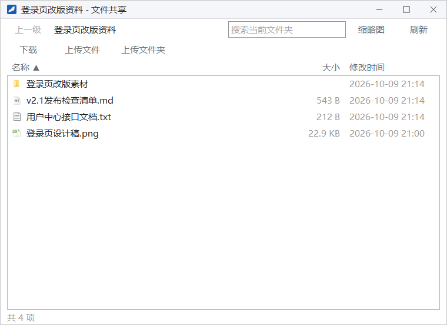
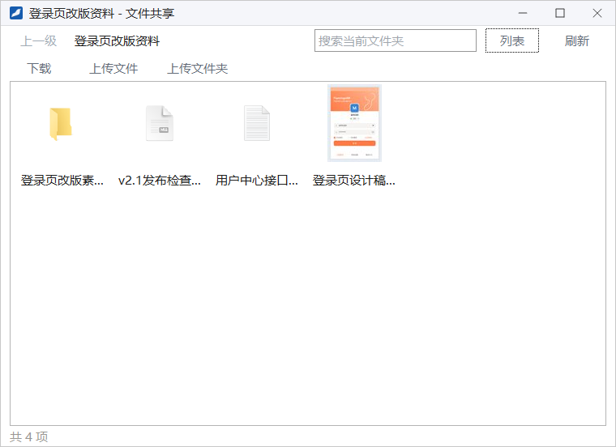
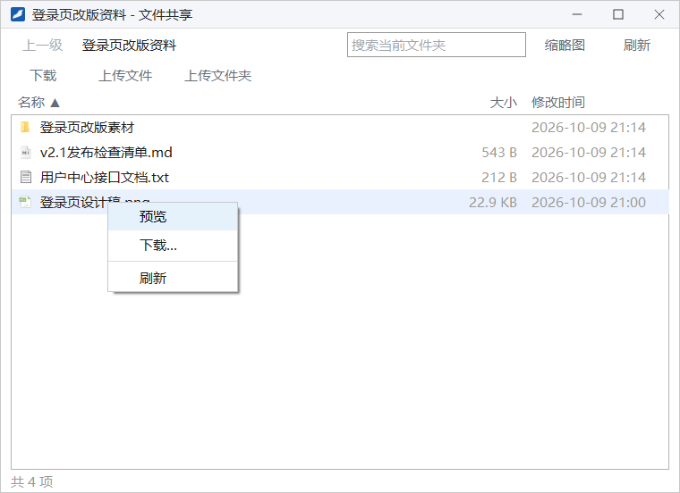
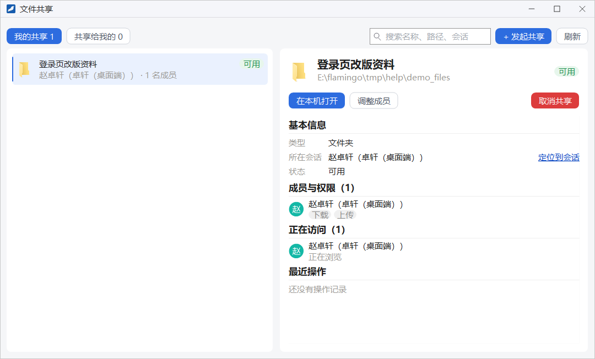

文件共享
文件共享把你电脑上的一个磁盘、文件夹或文件共享到会话里，会话成员可以像浏览本机文件夹一样实时浏览、下载，有权限时还能上传、新建文件夹、重命名、删除和移动。文件始终保存在你自己的电脑上，不会上传到服务器。
- 适用：全体员工，单聊和群聊都可以共享
- 需要：企业开启「文件共享」开关
- 分享者的客户端需要在线，成员才能访问
入口
- 单聊窗或群聊窗头部的文件夹图标（鼠标停在上面提示 文件共享）：弹出「本会话的共享」面板，列出这个会话里的共享；底部有 发起共享 和 管理全部共享。图标上的红色数字是本会话里当前可用的共享个数。
- 在主面板右键会话或联系人，选 共享文件给TA 或 共享文件到本群。
- 主面板「会话」「联系人」页签底部的 文件共享 按钮，或系统菜单里的 文件共享：打开「文件共享」中心，见本章「文件共享中心」。

1发起共享

- 在 共享内容 一行，点右侧的 磁盘、文件夹 或 文件，选择要共享的位置。选好后左侧显示类型和完整路径。
- 按需修改 共享名称，成员看到的就是这个名字。
- 需要时勾选 包含隐藏文件和系统文件；不勾选时成员看不到这些文件。
- 在 成员与权限 里勾选可以访问的成员。所有成员都可以浏览和下载；上传、新建文件夹、重命名、删除、移动这几项写权限可以逐人勾选，勾选的写权限只对该成员生效。勾选表头的复选框可以一次勾选整列。
- 点 发起共享，会话里随即出现一张共享卡片。
- 共享单个文件时没有写权限可选，成员只能下载。
- 至少要勾选一名成员。
共享卡片
发起共享后，聊天里会出现一张共享卡片，显示共享名称和状态。分享者一侧的卡片显示本机路径和「我的共享 · 可用」，按钮为 在本机打开，点它在资源管理器里打开这个位置；成员一侧显示「某某的共享 · 可用」，按钮为 打开，点它打开共享浏览窗（共享单个文件时按钮为 下载）。

1
共享暂时无法访问时，卡片显示「暂不可用」并写明原因，例如「分享者不在线」「共享的内容在分享者电脑上已不存在」；共享被取消后显示「已失效」，例如「分享者已取消共享」。分享者重新上线后，共享会恢复可用。
浏览与下载
成员点卡片上的 打开，会打开以共享名称为标题的共享浏览窗：

- 上一级 回到上一层文件夹，旁边显示当前所在的位置；双击文件夹进入下一层，双击图片打开预览。
- 搜索当前文件夹：输入关键字后按 Enter，在当前文件夹之下按名称查找；按 Esc 或点 上一级 回到文件夹列表。
- 缩略图 / 列表：在两种视图之间切换；缩略图视图里图片会显示预览。
- 刷新：重新读取当前文件夹。
- 下载：先选中文件或文件夹，再选择下载到本机的哪个文件夹。
- 上传文件、上传文件夹：把本机的文件或文件夹上传到当前文件夹，需要上传权限。有新建文件夹权限时，这一行还有 新建文件夹。
- 列表视图有 名称、大小、修改时间 三列，点列名按该列排序，再点一次反向；文件夹始终排在文件前面。左下角显示当前文件夹的项目数。


右键文件或文件夹会弹出菜单，菜单项按你拥有的权限显示：预览（图片）、下载…、重命名…、删除、移动到…、新建文件夹…、刷新。
传输列表
开始下载或上传后，共享浏览窗下方会出现「传输列表」，每次传输一行，显示名称、方向、进度和状态（排队中、已完成、已取消或失败原因）。选中一行再点 取消 可以取消这次传输。关闭共享浏览窗不会中断进行中的传输，传输会在后台继续，重新打开时传输列表会恢复显示。
文件共享中心
从主面板底部的 文件共享 按钮、系统菜单的 文件共享，或「本会话的共享」面板里的 管理全部共享，可以打开「文件共享」中心，集中管理所有共享：

- 顶部两个页签：我的共享 列出你发起的共享，共享给我的 列出别人共享给你的，页签上的数字是数量。
- 右上角可以按名称、路径（或分享者）、会话搜索；+ 发起共享 先选择要共享给谁，再打开「发起共享」窗口；刷新 重新加载列表。
- 选中左侧的一个共享，右侧显示详情。对自己的共享，可以 在本机打开、调整成员（修改成员与权限）和 取消共享；对别人共享给你的，可以 打开 共享浏览窗。
- 详情里的 基本信息 显示类型、所在会话和状态，点 定位到会话 打开对应的聊天窗；成员与权限 列出每位成员拥有的权限；正在访问 显示谁正在浏览或传输；最近操作 记录成员的下载、上传等操作。
取消共享前会再确认一次：取消后所有成员都无法再访问，正在进行的浏览与传输会立即结束。「本会话的共享」面板里的每个共享也有 打开、调整成员、取消共享 等操作。
右下角通知
别人访问你的共享时，你的屏幕右下角会弹出「文件共享动态」通知，告诉你谁下载、上传、重命名、删除或移动了哪些文件；你作为成员下载或上传完成时，会弹出「文件共享传输」通知。点通知里的 查看全部 可以打开「文件共享」中心查看。